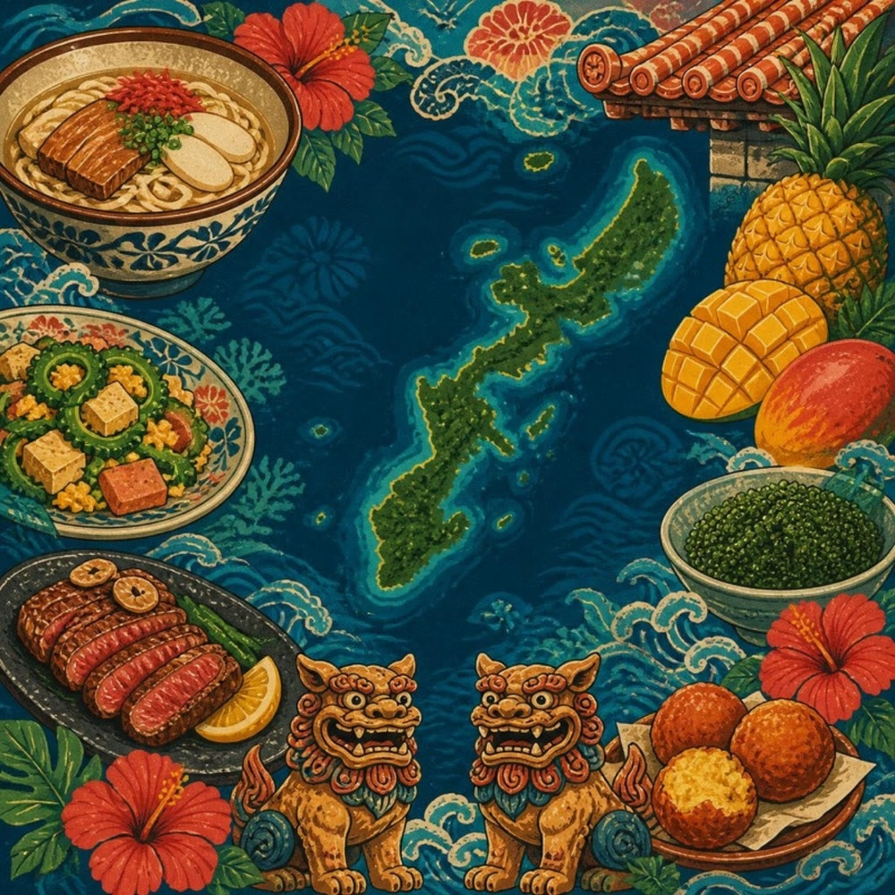

🌺 OKINAWA GOURMET GUIDE 2026 🌺
ひーちゃん
放浪記 沖縄版
OKINAWA ISLAND FOOD GUIDE
742
店
掲載店舗
20
エリア
12
ジャンル
昼・夜
営業表示
🗺️ インタラクティブマップ
ピンをタップ → 店舗情報・営業時間・Googleマップリンク ／ カードをタップ → マップが移動してピンが開く ／ 下の検索欄・ジャンルボタンで絞り込みも可能
✕
📍 現在地
🍽
ジャンル
▾
北部
中部
南部
🌳 やんばる
🐠 本部・今帰仁
🌿 名護
🌊 恩納村
⚾ 宜野座
🌮 金武
🌉 うるま
🏺 読谷
✈️ 嘉手納
🎠 沖縄市
🎡 北谷
🛒 中城・北中城
🏛️ 宜野湾
🎪 浦添
🎵 那覇
🌾 南風原・西原・与那原
🏯 豊見城
🌸 南城
🍃 八重瀬
🎣 糸満
✨ すべて
🍜 そば
🍥 ラーメン
🥟 中華
🍚 食堂
🥡 パーラー
🍱 和食
🍲 しゃぶ
🔥 焼肉
🥩 ステーキ
🍢 焼き鳥
🐟 海鮮
🍶 居酒屋
🍺 バー
🌮 タコス
🍔 バーガー
🍕 イタリアン
🥖 フレンチ
🍛 エスニック
🍽 洋食
☕ カフェ
🍨 スイーツ
🥐 パン
▼ 北 か ら 南 へ 縦 断 ル ー ト
✕ 検索をやめる
該当するお店がありません。
言葉を変えるか、ジャンルを「すべて」にしてみてください。
📊
エリア×ジャンル集計
数字をタップするとそのエリア・ジャンルの店舗に絞り込みます。